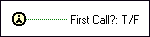

First Call? Function
Owning Palette: Synchronization VIs and Functions
Requires: Base Development System
Indicates that a subVI or section of a block diagram is running for the first time. The First Call? function returns TRUE only the first time you call it after you click the Run button.
You can place the First Call? function in multiple locations within a VI. The function returns TRUE the first time the section of the block diagram in which it is placed runs.

 Add to the block diagram Add to the block diagram |
 Find on the palette Find on the palette |